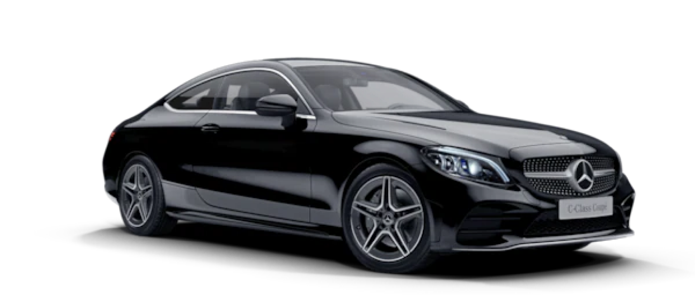

Добро пожаловать в наш интернет-магазин тюнинга авто! Здесь вы найдете все необходимое для улучшения и персонализации вашего автомобиля. Высококачественные детали, профессиональные советы и быстрые доставки – все для вашего комфорта и удовольствия за рулем. Начните преобразование вашего авто с нами!
